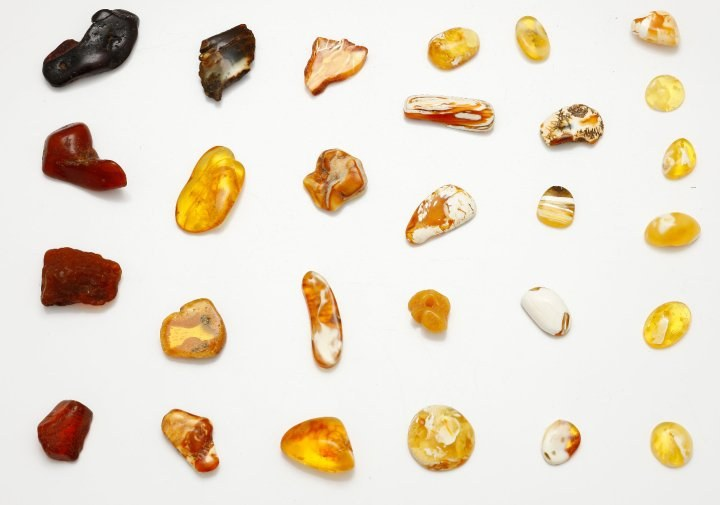

Gintarystė (amber-craft)¶
What it is¶
Amber-craft: Saulė’s grief as the universal medium. Amber stores memory and carries workings, and it is the only medium that all five elements accept (Kalba).
Gintarystė (amber-craft)

Gintarystė (amber-craft) · school — Image: Homik8 Michal Kosior, Public domain via Wikimedia Commons¶

Type |
school |
Family |
asked |
Note |
Gintarystė: amber-craft, resonance, and memory transmission through fossil resin. |
Who can use it (path & tier)¶
Tier 4 amber priestesses (the Palanga line, Birutė) work it fully; any bearer, even ungifted, can release charged amber with the right word (tier 0). Patron: Saulė.
How it works (medium, words, timing)¶
Raw amber carries any working. Charged amber holds a working breathed into it, released later by the bearer. Anchored amber carries the caster’s blood and links caster and bearer across any distance, only one anchor per caster at a time (a second breaks the first). Memory amber takes a last memory from one who dies holding it, and may show it to a seer. Amber answers to the truth of the bearer: the pebble is warm when freely given (Book I ch. 3), cold at the false baptism (ch. 19), burning at Žemyna’s price (ch. 20), hot at an honest choice (ch. 23), glowing at the baptism honest about its dishonesty (ch. 29).
Costs¶
The anchoring caster pays for every working done through the anchor; when Birutė cast from Palanga she paid in her voice and sight (Book I ch. 14–25). Amber taken from the shore after a storm without an offering goes cold for its life.
Limits & counters¶
One anchor at a time. Consecrated stone chills it: the pebble dies in the Order’s fortress (Book I ch. 19) and cannot be used while Vytautas carries the Order’s sword. The Order’s Bernsteinmeister burn charged amber. It does not flatter its bearer (Book III ch. 21, 25).
Folk basis [Historical record]¶
[Historical record]. Baltic amber has been traded since antiquity (Tacitus, Germania 45, has the Aestii gathering it), and amber was a grave good. The Teutonic Order controlled the Prussian amber trade and punished private gathering harshly. That amber remembers, or that it is Saulė’s tears, is saga overlay; the folk record ties amber to Jūratė’s shattered palace.
Notable practitioners¶
Birutė and the Palanga priestesses; Vytautas (the pebble: Book I ch. 3–29; it cracks at his death, Book IV ch. 29); the kneeling statue (kneeling woman); the Flame-Keeper (Book V ch. 29, the last speaking through amber).
Relations
Binds: Senovės Kalba — Amber is the universal medium for Kalba.
Patrons: Saulė — Amber = Saulė’s tears.
Practitioners: Birutė (…–1384) — tier 4 · Vytautas (1382–…) — tier 1 — Only through Birutė’s pebble; he is no amber-craftsman.
- School
- Asked power · Saulė's grief as the medium all five elements accept
- Tier
- Tier 4 works it fully (the Palanga line, Birutė). Any bearer can release charged amber with the right word (tier 0)
- Casting
- Breathe a working into amber. Anchoring adds the caster's blood
- Components
- Amber from the shore, taken with an offering; the caster's blood for an anchor; a word to release
- Cost
- The anchoring caster pays for every working done through the anchor: Birutė paid in voice and sight from Palanga. Amber taken after a storm without an offering goes cold for its whole life
- Duration
- Charged amber holds until released. An anchor holds until a second one breaks it
- Limits
- One anchor per caster at a time. Amber answers to the bearer's truth, not belief
- Counters
- Consecrated stone chills it; the Order's Bernsteinmeister burn charged amber in consecrated furnaces; the Order's sword
Four forms. Raw amber carries any working. Charged amber is released later by the bearer. Anchored amber links caster and bearer across any distance. Memory amber takes a last memory from one who dies holding it.
The barometer. The pebble: warm when freely given, a faint light in the dark, dead at the false baptism, burning at Žemyna's price, hot at an honest choice, glowing at a baptism honest about its dishonesty.
Distance. With an anchor distance is free, so Birutė reached Krėva from Palanga. Her bill was her voice and sight.
A second anchor. Breaks the first.
The unoffered. Shore-amber taken without an offering stays cold for life. Hanseatic merchants carry boxes of dead amber and never know.
Connections¶
graph LR
birute["Birutė"]
gintaryste["Gintarystė (amber-craft)"]
kalba["Senovės Kalba"]
saule["Saulė"]
vytautas["Vytautas"]
gintaryste -->|Binds| kalba
saule -->|Patron of| gintaryste
birute -->|Practises| gintaryste
vytautas -->|Practises| gintaryste
style gintaryste stroke-width:3px